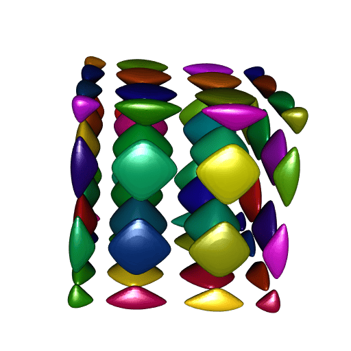
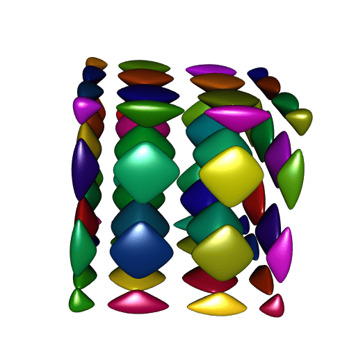

Splitting RCGAL... and the connected components
I published two posts here about my package RCGAL, the first one about surface reconstruction, and the second one about Boolean operations on 3D meshes.
Now I decided to split this package into two packages: SurfaceReconstruction, and MeshesOperations.
I think MeshesOperations is almost ready for submission to CRAN. I have just started SurfaceReconstruction today, but it already works.
Dealing with a ‘R CMD check’ issue
A technical note before playing with the MeshesOperations package. Feel free to skip this section.
I faced a ‘R CMD check’ issue on ‘win-builder’ with MeshesOperations. Namely, this so-called significant warning:
C:/.../BH/include/boost/container/detail/copy_move_algo.hpp:184:19: warning:
'void* memmove(void*, const void*, size_t)' writing to an object of type 'value_type'
{aka 'struct std::pair, std::allocator >, long long unsigned int> > >,
std::allocator, std::allocator >, long long unsigned int> > > > >,
CGAL::internal::In_place_list_iterator, std::allocator >,
long long unsigned int> > >, std::allocator, std::allocator >,
long long unsigned int> > > > > >'}
with no trivial copy-assignment; use copy-assignment or copy-initialization
instead [-Wclass-memaccess]This is a warning from the BH package (which allows to use the C++ library Boost with Rcpp). On Linux, the ‘R CMD check’ report was clean.
I found a solution to this issue. I describe it here, in case it could help someone.
In order to use the BH package, I included it in the LinkingTo field of the DESCRIPTION file. Then I discovered that this was not necessary with R-4.2.0, and that’s because Rtools42 contains the Boost library.
So this solved the problem for Windows, but created a new problem for the other OSs. Then I solved this new problem by:
putting BH in the Suggests field of DESCRIPTION (and only in this field)
adding the following lines in the Makevars file in the src folder of the package (breaking the first line for display here):
BH_PATH = `echo 'cat(system.file("include", package = "BH", mustWork=TRUE))' \
| "${R_HOME}/bin/R" --vanilla --no-echo`
PKG_CXXFLAGS = -I$(BH_PATH)The first line allows to call R to get the path of the include folder of the BH package, and this path is set to the variable BH_PATH.
Of course I didn’t change the Makevars.win file. This works, but I don’t know yet whether this is acceptable for CRAN. However I am optimistic, since such a technique can be found in ‘Writing R extensions’.
Connected components
There’s something new in MeshesOperations as compared to RCGAL: the computation of the connected components of a mesh. I’m going to show you an example. Note that the mesh in this example is triangle (i.e. it only has triangular faces), and then one could alternatively use my package MeshesOperations (not submitted to CRAN yet) to get the connected components of this mesh.
So let’s try this feature. Our example is an isosurface called the C8 surface. Unfortunately I do not remember where I found it. I’m using the rmarchingcubes to construct a mesh of this isosurface.
f <- function(x, y, z){
64*x**8 - 128*x**6 + 80*x**4 - 16*x**2 + 2 + 64*y**8 - 128*y**6 +
80*y**4 - 16*y**2 + 64*z**8 - 128*z**6 + 80*z**4 - 16*z**2
}
ngrid <- 150L
x <- y <- z <- seq(-1.1, 1.1, len = ngrid)
Grid <- expand.grid(X = x, Y = y, Z = z)
voxel <- array(
with(Grid, f(X, Y, Z)), dim = c(ngrid, ngrid, ngrid)
)
library(rmarchingcubes)
contour_shape <- contour3d(
griddata = voxel, level = -0.1,
x = x, y = y, z = z
)Now let’s plot it with rgl:
library(rgl)
tmesh <- tmesh3d(
vertices = t(contour_shape[["vertices"]]),
indices = t(contour_shape[["triangles"]]),
normals = contour_shape[["normals"]],
homogeneous = FALSE
)
open3d(windowRect = c(50, 50, 562, 562))
shade3d(tmesh, color = "darkred")
As you can see, it has many isolated parts, the so-called connected components.
Now we use the MeshesOperations package to extract these connected components, while requesting the vertex normals of each component:
library(MeshesOperations)
meshes <- connectedComponents(
vertices = contour_shape[["vertices"]],
faces = contour_shape[["triangles"]],
normals = TRUE
)
# Found 64 components.Now let’s plot all theses meshes, one color per mesh:
ncc <- length(meshes)
library(randomcoloR)
colors <- randomColor(ncc, hue = "random", luminosity = "dark")
open3d(windowRect = c(50, 50, 562, 562))
for(i in 1L:ncc){
cc <- meshes[[i]]
tmesh <- tmesh3d(
vertices = t(cc[["vertices"]]),
indices = t(cc[["faces"]]),
normals = cc[["normals"]],
homogeneous = FALSE
)
shade3d(tmesh, color = colors[i])
}
Nice. However there is one problem: compare the smoothness of these meshes to the smoothness of our first plot. It is not as smooth.
I think I know why. The smoothness depends on the vertex normals. Here
we computed the normals with CGAL, then each vertex normal is obtained
by averaging the normals of the surrounding faces of this vertex. We
could have used rgl::addNormals instead, the result would be the same.
But there is a convenient way to get the “true” vertex normals of an
isosurface: the normal associated to a vertex is the gradient of the
isosurface function evaluated at the coordinates of this vertex. So my
guess is that rmarchingcubes uses the gradient. I am still thinking
of having the possibility to preserve the original normals when
computing the connected components, I didn’t have the time yet to find
how to do that. This is not a problem, we will compute the true normals
with R. In fact we will probably do better than rmarchingcubes:
surely this package numerically computes the gradient, while we will use
the exact gradient. How? Look at the isosurface function f: this is
a multivariate polynomial. So it is easy to calculate its derivatives.
This would be tedious to calculate them by hand however, so let’s use
the spray package:
library(spray)
# define the polynomial corresponding to f:
P <- f(lone(1,3), lone(2,3), lone(3,3))
# and its derivatives:
dfx <- as.function(deriv(P, 1L))
dfy <- as.function(deriv(P, 2L))
dfz <- as.function(deriv(P, 3L))
# the gradient is:
gradient <- function(xyz){
cbind(dfx(xyz), dfy(xyz), dfz(xyz))
}Just a couple of lines of code… Now let’s do the plot with the true normals:
open3d(windowRect = c(50, 50, 562, 562))
for(i in 1:ncc){
cc <- meshes[[i]]
tmesh <- tmesh3d(
vertices = t(cc$vertices),
indices = t(cc$faces),
normals = gradient(cc$vertices),
homogeneous = FALSE
)
shade3d(tmesh, color = colors[i])
}
A perfect smoothness!